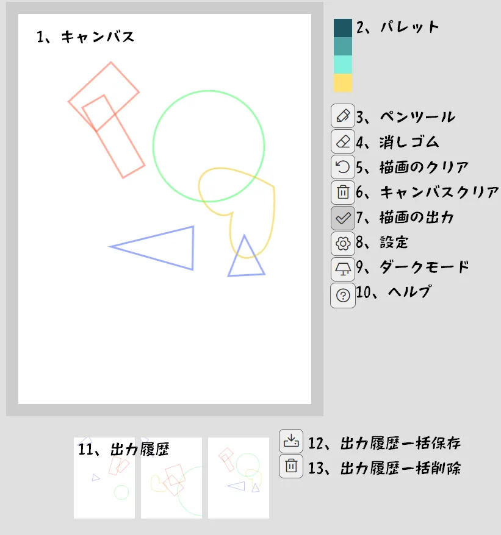
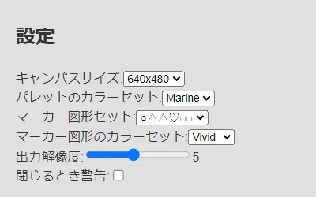

Doodle Seed
キャンバスにランダムな図形やぐちゃぐちゃの線をうっすら表示し描画の補助とし、イラストの構図案・アイデアを描き出す補助をするアプリケーションです。
マーカー図形は○△□♡と曲線のほか、非表示での利用も可能。
⇒ つかってみる✍️
更新履歴
2025-2-26(Wed) スマホでの画像一覧保存の動作を修正（html2canvas→html-to-imageに変更）
2025-1-21(Tue) 図形の追加 キャンバスサイズ設定の読み込みを修正
2025-1-19(Sun) 図形種類増やしたりデフォルト設定を変えたり
2024-11-26(Tue) とりあえず公開
つかいかた
メイン画面

- キャンバス - ここにマウスやペンで描画
- パレット - 4色 ペンツールの色を切り替え
- ペンツール - ペンツールに切り替え
- 消しゴム - 消しゴムツールに切り替え 背面の図形は消えない
- 描画のクリア - 背面の図形を消さずに描画を消去
- キャンバスクリア - 背面の図形ごと消去して新規作成
- 描画の出力 - キャンバスの内容を下部に出力
- 設定 - 設定画面を開く
- ダークモード - ダーク/ライトモードの切り替え
- ヘルプ - これを開きます
- 出力履歴 - 画像クリックで1枚ずつダウンロード
- 出力履歴一括保存 - 出力済画像を縦横に連結したものをダウンロード
- 出力履歴一括削除 - 出力ログの全削除
設定画面

- キャンバスサイズ - キャンバスサイズを切り替えます
- パレットのカラーセット - ブラシのカラーパレットを切り替えます
- マーカー図形セット - 背面の図形セットを切り替えます
- マーカー図形のカラーセット - 背面の図形の色を切り替えます
- 出力解像度 - 一括保存時のサイズを変更します デフォルト5
- 閉じる際に確認ダイアログを表示
想定される使い方
図形マーカーや別で用意した資料等を元に構図とかポーズのアイデアをひたすら出して、ある程度描けたらダウンロードして他のアプリで描く…という想定です。
○△□♡は頭・手・足・骨盤のイメージ…で作り始めたけど、マーカー非表示で30秒ドローイング的に使うかランダムなベジエ曲線が表示されるぐるぐるが使いやすいかもしれない
正確な骨格などが表示されるわけではないので、しっかり描く際はアイデアを元に3Dモデルなど置くといいと思います
おやくそく
なにが起きても責任は取りません。パレットなどの設定はブラウザに保存されるけど画像はタブ閉じると消えるとおもうのでバックアップはしっかりね
ありがと祭り
発想元
イラストの構図が思いつかない時はランダム線がおすすめ！構図を考えるコツを解説 | MediBang Paint – 無料のイラスト・マンガ制作ツール
使っているもの
Vue.js - The Progressive JavaScript Framework | Vue.js MIT License
Fabric.js Javascript Canvas Library - License
Phosphor Icons MIT License
html2canvas - Screenshots with JavaScript MIT License
html-to-image MIT License
つくったひと
Ametama69 - やり場のないメモ
Share on
[["X(Twitter)","https://twitter.com/intent/post?text=","ph ph-x-logo"],
["Threads","https://www.threads.net/intent/post?text=","ph ph-threads-logo"],
["Bluesky","https://bsky.app/intent/compose?text=","ph ph-butterfly"],
["Taittsu","https://taittsuu.com/share?text=","ph ph-pants"],
["fedifile","https://fedifile.net/share?text=","ph ph-fediverse-logo"]]
Back
Top